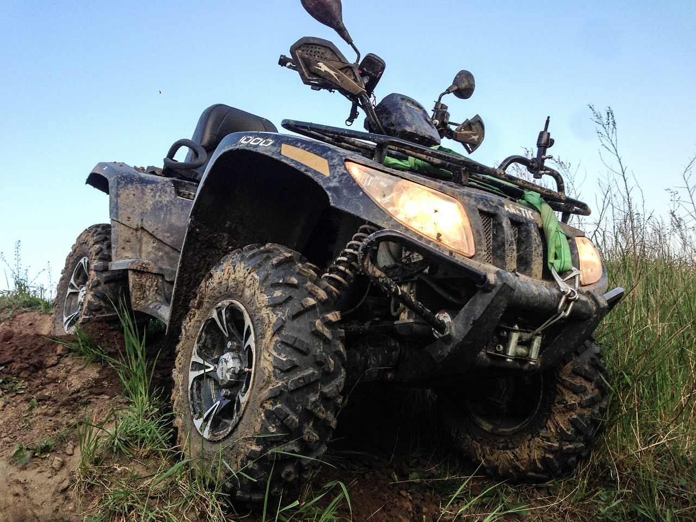
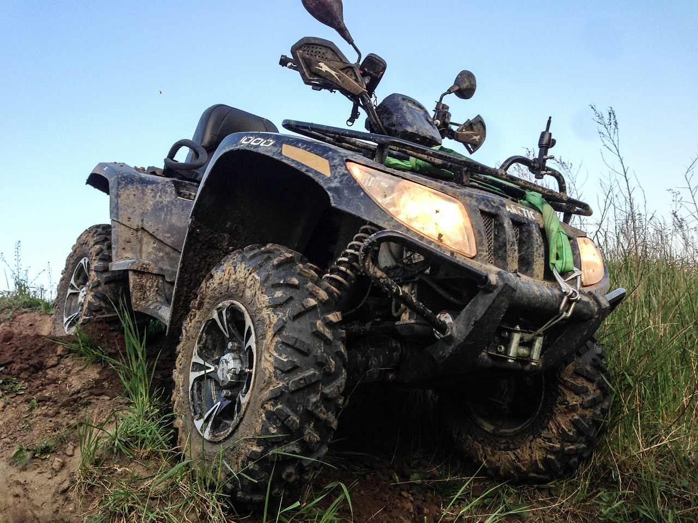

van egy hugom aki 12 éves
a hobbim a tánc
szeretek kirándulni a természetben
szeretem a kocsikat és a quadokat/motorokat
 

| 9.K | |||||
| Hé | Ke | Sz | Cs | P | |
| 0 | Programozási alapok | ||||
| 1 | Magyar nyelv és irodalom | Angol nyelv | |||
| 2 | Testnevelés | Magyar nyelv és irodalom | Osztályfőnöki | Informatika és Távközlés alapok 1. | Történelem |
| 3 | Történelem | Angol nyelv | Angol nyelv | Magyar nyelv és irodalom | |
| 4 | IKT projektmunka 1. | Matek | |||
| 5 | Komplex természettudomány | Magyar nyelv és irodalom | Komplex természettudomány | Testnevelés | Honvédelem |
| 6 | IKT projektmunka 1. | Matek | Matek | Matek | Magyar nyelv és irodalom |
| 7 | Digitális kultura | Komplex természettudomány | Történelem | Testnevelés | |
| 8 | |||||